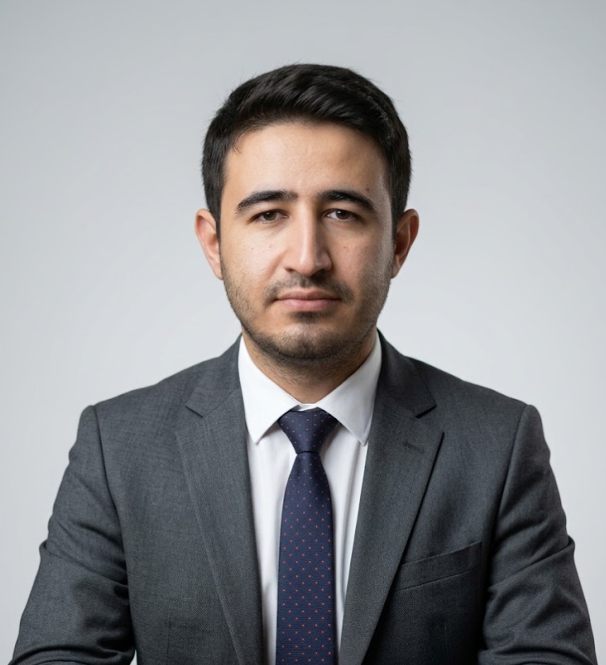
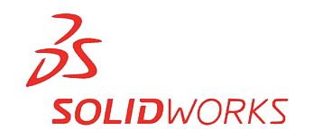

Mühendislik &
Optimizasyon.
Mühendislik & Optimizasyon. KTO Karatay Üniversitesi Makine Mühendisliği mezunu olarak; teorik mühendislik altyapımı SolidWorks, AutoCAD ve ANSYS kullanarak üretime hazır, optimize edilmiş tasarımlara dönüştürüyorum. Sadece CAD modellemesi ile yetinmeyip, sistemlerin termal ve yapısal analizlerini (FEA) gerçekleştiriyorum. Temel hedefim, fonksiyonelliği ve endüstriyel estetiği birleştiren mekanik çözümler üretmektir.
Temel hedefim, fonksiyonelliği ve endüstriyel estetiği birleştiren mekanik çözümler üretmektir.

